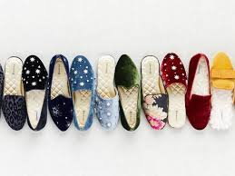

}
BIANCA GATES- BIRDIES

Bianca Gates is a first-generation American, her parents having immigrated to the U.S. from Latin America. As such, she says, after graduating from UC Irvine, she was expected to get a safe job with a 401(k) plan and to live with her parents until she was married.
Things haven’t gone exactly that way, but one can imagine Gates’s parents feeling pretty satisfied with their daughter’s trajectory nevertheless. The reason: Gates and Marisa Sharkey are the co-founders of Birdies, a four-year-old, San Francisco-based footwear brand that has made it chic to step out in shoes that look like elegant slippers, and which just raised $8 million in Series A funding led by Norwest Venture Partners, with participation from Slow Ventures and earlier investor Forerunner Ventures.
Sure, another e-commerce brand, why should you care? Actually, if haven’t seen the shoes out in the wild, there’s a high likelihood that will change soon, including because one of the company’s biggest advocates to date has been Meghan Markle, the actress-turned-Duchess of Sussex, whose fashion choices are copiously detailed by entertainment sites around the world, copied by their readers, then picked up by readers’ friends.
Interestingly, Markle was never meant to step outside in the slippers. But let’s back up a bit first, to Gates’s earlier career, a familiar story that underscores the value of grit — as well as the importance of making the right connections.
As Gates tells it from Birdie’s offices on Union Street, a kind of yuppie haven in San Francisco, after college, “I just wanted to spread my wings and move to a big city with a lot of diversity.” Thanks partly to her fluency in Spanish, she landed a job in with the broadcast giant Univision as an account executive in New York. After more than three years, and “realizing I didn’t want to be typecast as an Hispanic person working for Hispanic TV,” she left for Viacom, where Gates fell for a colleague.
He landed soon after at Stanford Business School, and after plenty of cross-country flights, the two married and moved to San Francisco to start their family, with Gates opening up an office for Viacom’s MTV in the process. But she was soon feeling antsy again. “It was really convenient for me, but I [felt] after having my first child and working out of a satellite office that I was out of the action. I wanted to be closer to people.”
As it happens, she caught a 2011 commencement speech that Facebook COO Sheryl Sandberg delivered to Barnard College students and decided to apply to Facebook. Six months of interviews later, she landed a job leading retail partnerships, where she helped sales organizations understand what was then a new platform to them.
what are birdies?
Birdies has reinvented the slipper, blending elevated style with luxurious comfort. Birdies combines the support of a sneaker, the softness of a slipper and the style of a designer flat. This unique balance of style, comfort and versatility have resulted in women wearing Birdies at home and everywhere.